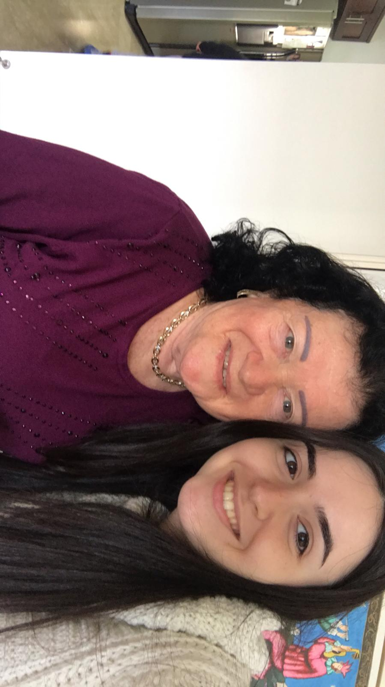
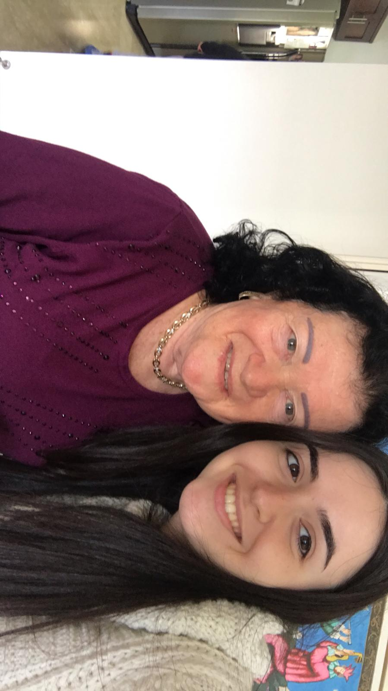
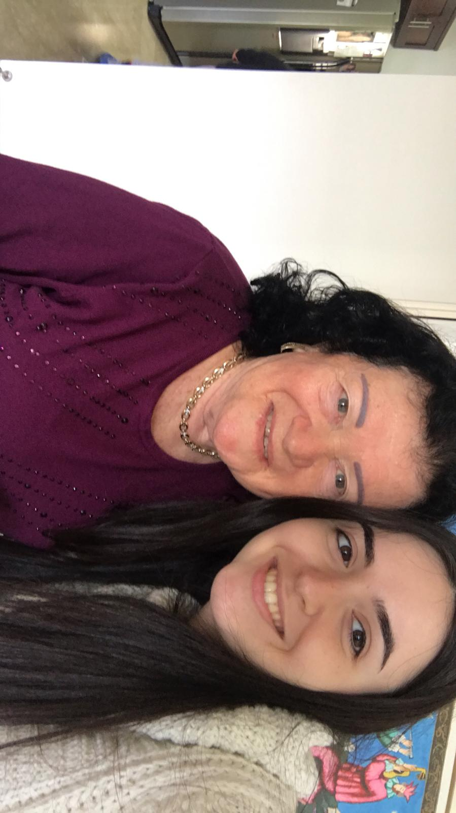

My Photos


 

אתי גוכברג, נולדה ב-7 ביוני 1940 בקישינב, בירת מולדובה. אתי הייתה בת יחידה למינה ובוריס וכשהייתה בת שנה, אביה נשלח להילחם במלחמת העולם השנייה אך מעולם לא חזר ולכן הבינו שנהרג. בבית דיברו רוסית, רומנית ויידיש. אתי בילדות אהבה לשיר, לרקוד ולסרוג. אתי ובעלה זימא (סבא שלי) היו ביחד באותה כיתה במשך 7 שנים ולימים התחתנו בברית המועצות והביאו 2 ילדים. לאחר שעלו לארץ בשנת 1972, סבתי עבדה בעיריית עפולה בהנדסה ותכנוני בנייה. הייתה גם מתנדבת בביטוח לאומי ,יועצת לענייני זקנה ונכות ומנהלת מועדון פנסיונרים בעפולה. אתי אהבה מאוד לשיר ולכן הייתה פעילה במקהלה המקומית.

your playlists here
your likes here
your QR here
your answers here
your contact here